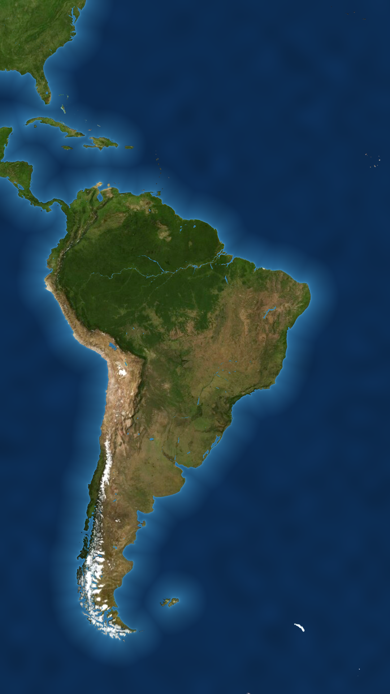
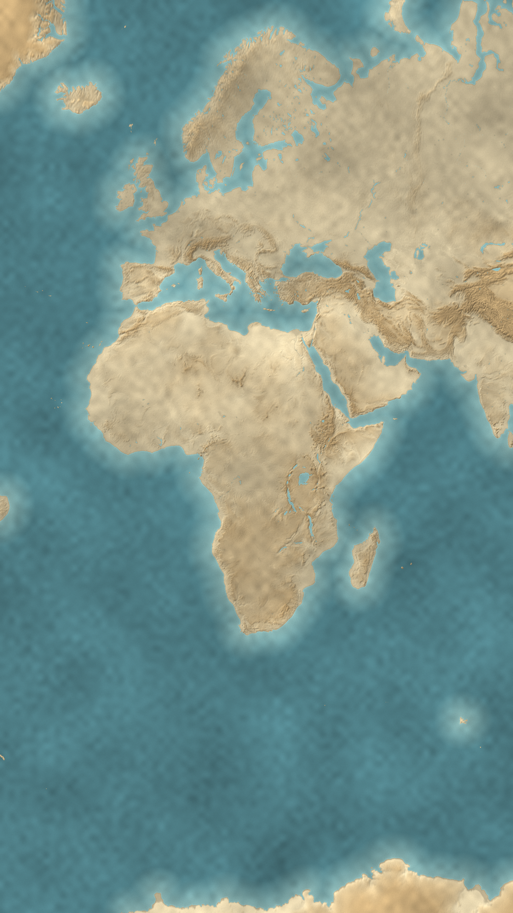
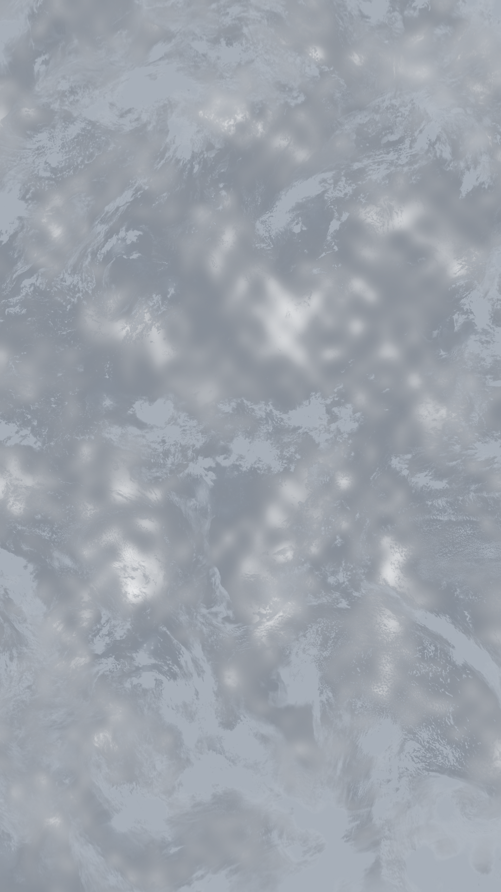
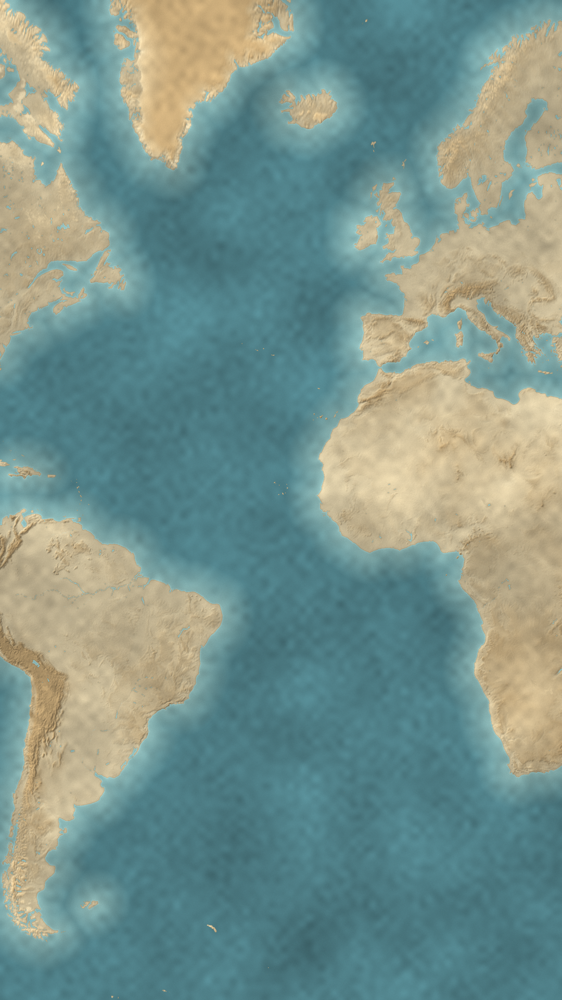

<!doctype html>
<html lang="ru">
<head>
<meta charset="utf-8">
<title>Карта-история — реализм</title>
<style>
@font-face{font-family:'Cormorant Garamond';font-weight:700;src:url(fonts/cormorant-garamond-cyrillic-700-normal.woff2) format('woff2');unicode-range:U+0400-045F,U+0490-0491,U+04B0-04B1,U+2116}
@font-face{font-family:'Cormorant Garamond';font-weight:700;src:url(fonts/cormorant-garamond-latin-700-normal.woff2) format('woff2');unicode-range:U+0000-00FF,U+2000-206F}
*{box-sizing:border-box;margin:0;padding:0}
html,body{width:1080px;height:1920px;overflow:hidden;background:#f1f2f6}
body{font-family:'Inter Display','Inter',sans-serif;-webkit-font-smoothing:antialiased;color:#111218}
.abs{position:absolute}
.mono{font-family:'DejaVu Sans Mono',monospace}
.ctr{position:absolute;transform:translate(-50%,-50%);white-space:nowrap;text-align:center}
.pill{position:absolute;border-radius:999px;display:flex;align-items:center;justify-content:center;white-space:nowrap;background:rgba(255,255,255,.95);border:1.5px solid #fff;box-shadow:0 14px 30px -14px rgba(10,20,40,.45);transform:translate(-50%,-50%)}
.card{position:absolute;border-radius:40px;background:#fff;box-shadow:0 40px 80px -36px rgba(10,20,40,.6),0 10px 24px -12px rgba(10,20,40,.25)}
.chip{display:inline-flex;align-items:center;gap:12px;white-space:nowrap;padding:10px 24px;border-radius:999px;background:#fff;font-weight:800;letter-spacing:.04em;box-shadow:0 14px 28px -12px rgba(10,20,40,.5)}
.blue{color:#2f7bf5}
.sub{position:absolute;left:540px;transform:translate(-50%,-50%);padding:16px 34px;border-radius:999px;background:rgba(255,255,255,.96);font-weight:700;font-size:37px;letter-spacing:-.01em;white-space:nowrap;box-shadow:0 16px 34px -16px rgba(10,20,40,.55)}
.plate{position:absolute;left:0;top:0;width:1080px;height:1920px}
svg{display:block}
</style>
</head>
<body>
<div id="root" class="abs" style="inset:0"></div>
<script src="lib/d3-array.min.js"></script>
<script src="lib/d3-geo.min.js"></script>
<script src="lib/topojson-client.min.js"></script>
<script src="lib/world50m.js"></script>
<script src="plates/plates.js"></script>
<script src="icons.js"></script>
<script>
const V=(location.hash||'#S1').slice(1);
const ROOT=document.getElementById('root');
const BLUE='#2f7bf5',ORANGE='#f08a24',INK='#2a2118';
const countries=topojson.feature(WORLD,WORLD.objects.countries).features.filter(c=>c.id!=='010');
const byId=id=>countries.find(c=>c.id===id);
const MIDEAST=new Set(['682','887','512','784','634','414','368','400','376','760','422','364','792','275','048','196']);
const html=s=>{const d=document.createElement('div');d.innerHTML=s.trim();const e=d.firstChild;ROOT.appendChild(e);return e};
const proj=name=>{const P=PLATES[name];return d3.geoMercator().scale(P.k).translate([P.tx,P.ty])};
function counter(n){const sl=[0,1,2,3,4,5].map(k=>`<span style="font-style:italic;color:${k<n?BLUE:'#c6cbdb'}">/</span>`).join('');
  html(`<div class="pill" style="left:540px;top:150px;height:70px;padding:0 30px;gap:20px;font-weight:800;font-size:31px;letter-spacing:.04em"><span>ГЛАВА ${n} ИЗ 6</span><span class="mono" style="font-size:37px;letter-spacing:-.04em;font-weight:700">${sl}</span></div>`)}
const at=(x,y,inner,extra='')=>html(`<div class="abs" style="left:${x}px;top:${y}px;${extra}">${inner}</div>`);
// smooth curve through projected points (Catmull-Rom → cubic Bézier)
function smooth(pts){let d=`M${pts[0][0]},${pts[0][1]}`;for(let i=0;i<pts.length-1;i++){const p0=pts[i-1]||pts[i],p1=pts[i],p2=pts[i+1],p3=pts[i+2]||p2;
  d+=` C${p1[0]+(p2[0]-p0[0])/6},${p1[1]+(p2[1]-p0[1])/6} ${p2[0]-(p3[0]-p1[0])/6},${p2[1]-(p3[1]-p1[1])/6} ${p2[0]},${p2[1]}`}return d}

// ───────────── S1: today — real satellite, Brazil lifted out with the house label card
if(V==='S1'){
  at(0,0,'');
  const pr=proj('intro'),path=d3.geoPath(pr),br=byId('076');
  html(`<svg class="abs" style="left:0;top:0" width="1080" height="1920">
   <defs><filter id="gl" x="-20%" y="-20%" width="140%" height="140%"><feGaussianBlur stdDeviation="14"/></filter></defs>
   <path d="${path(br)}" fill="none" stroke="#7fb2ff" stroke-width="18" opacity=".55" filter="url(#gl)"/>
   <path d="${path(br)}" fill="${BLUE}" fill-opacity=".34" stroke="#fff" stroke-width="4" stroke-linejoin="round"/>
  </svg>`);
  const c=pr([-50.5,-11]);
  at(c[0]-80,c[1]-80,ICON.pulse(BLUE,.35));
  html(`<svg class="abs" style="left:0;top:0" width="1080" height="1920"><path d="M${c[0]} ${c[1]-18} L${c[0]} 560" stroke="#fff" stroke-width="3" stroke-dasharray="2 9" stroke-linecap="round"/></svg>`);
  html(`<div class="card" style="left:${c[0]-300}px;top:300px;width:600px;height:260px"></div>`);
  html(`<div class="ctr" style="left:${c[0]}px;top:378px;font-weight:900;font-size:76px;letter-spacing:-.045em">Бразилия</div>`);
  html(`<div class="abs" style="left:${c[0]}px;top:470px;transform:translateX(-50%);display:flex;gap:14px"><span class="chip" style="background:${BLUE};color:#fff;font-size:28px">№1 · ЮЖНАЯ АМЕРИКА</span><span class="chip" style="font-size:28px;color:${BLUE};box-shadow:inset 0 0 0 2px #dbe6fb">№5 · МИР</span></div>`);
  counter(1);
  html(`<div class="sub" style="top:1760px">самая большая страна Южной Америки</div>`);
}

// ───────────── S2: the age of sail — relief map, storm clouds part around the route, a caravel rounds the Cape
if(V==='S2'){
  at(0,0,'');
  const pr=proj('voyage');
  const route=[[-9.1,38.7],[-16,29],[-22,14],[-27,0],[-24,-18],[-8,-33],[10,-37.5],[20,-36.6],[31,-30],[39,-19],[41,-6],[52,4],[66,10],[75.8,11.25]].map(p=>pr(p));
  const shipAt=7;   // the ship has just rounded the Cape
  const done=smooth(route.slice(0,shipAt+1)),todo=smooth(route.slice(shipAt));
  html(`<svg class="abs" style="left:0;top:0" width="1080" height="1920">
   <path d="${todo}" fill="none" stroke="#fff" stroke-width="5" stroke-dasharray="3 14" stroke-linecap="round" opacity=".75"/>
   <path d="${done}" fill="none" stroke="#fff" stroke-width="11" stroke-linecap="round" opacity=".9"/>
   <path d="${done}" fill="none" stroke="${BLUE}" stroke-width="6" stroke-dasharray="18 12" stroke-linecap="round"/>
  </svg>`);
  // clouds close in everywhere except the corridor the ship is opening
  at(0,0,'');
  const sp=route[shipAt];
  at(sp[0]-300,sp[1]-34,ICON.wake(250));
  at(sp[0]-110,sp[1]-176,ICON.caravel(.95));
  const L=route[0],T=route[route.length-1];
  at(L[0]-12,L[1]-12,`<div style="width:24px;height:24px;border-radius:50%;background:#fff;box-shadow:0 0 0 6px ${BLUE},0 8px 18px rgba(0,0,0,.4)"></div>`);
  html(`<div class="chip" style="position:absolute;left:${L[0]+30}px;top:${L[1]-26}px;font-size:27px;padding:8px 20px 8px 10px">${ICON.flagPT(.5)}ЛИССАБОН · 1497</div>`);
  at(T[0]-80,T[1]-80,ICON.pulse(BLUE,.6));
  html(`<div class="chip" style="position:absolute;left:${T[0]}px;top:${T[1]+52}px;transform:translateX(-80%);font-size:27px;color:${BLUE}">ИНДИЯ</div>`);
  counter(2);
  html(`<div class="sub" style="top:1760px">вокруг Африки — в Индию</div>`);
}

// ───────────── S3: the split — relief map, a quill inks the line, tinted halves let the terrain show through
if(V==='S3'){
  at(0,0,'');
  const pr=proj('treaty'),path=d3.geoPath(pr),X=pr([-46.5,0])[0],cen=c=>d3.geoCentroid(c);
  const west=countries.filter(c=>cen(c)[0]<-25),east=countries.filter(c=>{const [lo,la]=cen(c);return lo>-20&&lo<52&&la<37&&!MIDEAST.has(c.id)});
  const yEnd=1240;   // the ink has reached this far
  html(`<svg class="abs" style="left:0;top:0;mix-blend-mode:multiply" width="1080" height="1920">
   <defs><clipPath id="cw"><rect width="${X}" height="1920"/></clipPath><clipPath id="ce"><rect x="${X}" width="${1080-X}" height="1920"/></clipPath></defs>
   <g clip-path="url(#cw)" fill="${ORANGE}" opacity=".62">${west.map(c=>`<path d="${path(c)}"/>`).join('')}</g>
   <g clip-path="url(#ce)" fill="${BLUE}" opacity=".72">${east.map(c=>`<path d="${path(c)}"/>`).join('')}<path d="${path(byId('076'))}"/></g>
   <path d="${path(byId('724'))}" fill="${ORANGE}"/><path d="${path(byId('620'))}" fill="${BLUE}"/>
  </svg>`);
  html(`<svg class="abs" style="left:0;top:0" width="1080" height="1920">
   <defs><filter id="ink" filterUnits="userSpaceOnUse" x="0" y="0" width="1080" height="1920"><feTurbulence type="fractalNoise" baseFrequency=".9" numOctaves="2" seed="2"/><feDisplacementMap in="SourceGraphic" scale="3"/></filter></defs>
   <path d="M${X} 0 L${X} ${yEnd}" stroke="#fff" stroke-width="14" stroke-linecap="round" opacity=".55"/>
   <path d="M${X} 0 L${X} ${yEnd}" stroke="${INK}" stroke-width="8" stroke-linecap="round" filter="url(#ink)"/>
   <circle cx="${X}" cy="${yEnd}" r="7" fill="${INK}"/>
  </svg>`);
  at(X-14*1.4,yEnd-288*1.4,ICON.quill(1.4),'filter:drop-shadow(0 18px 18px rgba(0,0,0,.25))');
  html(`<div class="chip" style="position:absolute;left:${X-40}px;top:560px;transform:translateX(-100%);font-size:28px;padding:8px 22px 8px 10px">${ICON.flagES(.5)}ИСПАНИЯ</div>`);
  html(`<div class="chip" style="position:absolute;left:${X+40}px;top:560px;font-size:28px;padding:8px 22px 8px 10px">${ICON.flagPT(.5)}ПОРТУГАЛИЯ</div>`);
  at(640,1180,ICON.treaty(1.05),'filter:drop-shadow(0 24px 30px rgba(0,0,0,.3))');
  counter(3);
  html(`<div class="sub" style="top:1760px">всё к западу — Испании, к востоку — Португалии</div>`);
}
document.fonts.load('700 30px "Cormorant Garamond"','Договор').then(()=>Promise.all([...document.images].map(i=>i.decode()))).then(()=>{window.ready=true});
</script>
</body>
</html>
